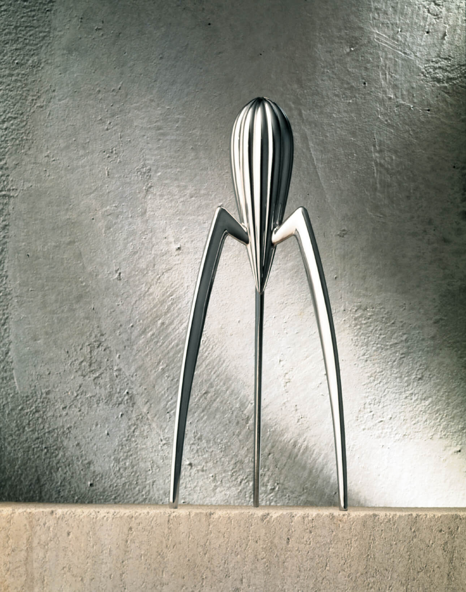
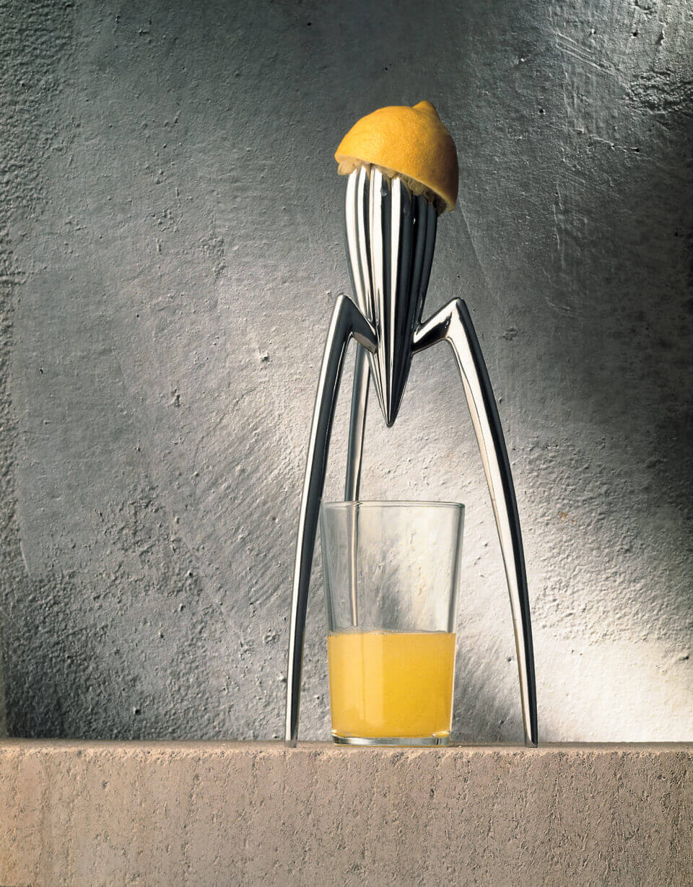

Juicy Salif 是 Philippe Starck 为 Alessi 设计的柑橘榨汁器。三条细长的支腿托起带沟槽的主体，下方没有接汁容器，也没有筛网。这种近似小雕塑的形态，把榨汁过程分成了上方的挤压和下方的接汁。

支架与杯子空间
Alessi 的产品说明把长腿与下方的杯子空间联系起来。使用时，杯子直接放在主体下方接汁，不必先接进器具附带的容器，再倒入杯中。[1]
支腿之间的空隙，在造型分析里称为“负空间”，即实体之间保留下来的空间。Juicy Salif 的下半部没有被容器包住，三条支腿围出一片开放区域。杯子放进去后，原本空着的部分有了用途，产品与杯子共同构成了使用时的完整形态。
比例上，较饱满的主体集中在上方，向下延伸的支腿细而长。实体与空隙的对比，使主体显得悬起，下部则较为通透。这里的轻巧是视觉印象，不代表器具实际更轻或按压更稳。支腿的长度也没有只用于拉长轮廓，它同时提供了杯子所需的高度。
不过，杯子空间只是使用条件之一。杯子的高度、台面的位置，以及压果实时手臂的姿势，都影响操作。抬高主体能容纳杯子，并不能直接证明它比别的榨汁器更省力。
扶持与按压

Alessi 署名说明书要求把器具放稳，一手扶住某条支腿的上部，另一手拿半个果实，轻压并缓慢转动。支腿因此既要撑起主体，其中一条还要供使用者扶持。[2]
双手配合是这套操作的一部分。实际评价时，除了支脚是否站稳，还要考虑扶持位置是否顺手、转动果实时姿势是否舒服。说明书提供的是操作方法，没有给出与同类产品的省力或稳定性比较。
沟槽与轮廓的收束
主体的轮廓从较饱满的上部逐渐缩窄，沟槽也沿曲面向下延伸，集中到下方尖端。这种从宽到窄、从分散到集中的变化，在造型上形成了“收束”。尖端位于杯子上方，使外形的集中位置与接汁位置相对应。
表面沟槽的重复还构成了视觉节奏，即相似线条有规律地连续出现。沟槽顺着曲面转向，既让人辨认出主体的弧度，也强调了上下方向。与三条向外展开的支腿相比，主体显得更集中：支架在外围撑开空间，尖端则对着中央的杯口。
接汁与过滤
汁液从主体流入下方杯子，籽和果肉也可能一起进入。Aberdeen 博物馆的藏品说明特别提到了这一点：Juicy Salif 没有在接汁过程中把它们筛掉。[3]
如果只是给一杯饮品挤一点柠檬汁，使用者可能接受这种直接接汁的方式；如果需要去籽，就还得准备滤网，或在之后处理。器具自身省掉了筛网，但对需要过滤的人来说，这道工序仍然存在。
Bryan Maniotakis 在 minimalgoods 的使用文章里写到，他会加一块砧板，并用小滤网接籽。这样一来，杯子、滤网和台面保护都由使用者另行安排。文章反映的是他自己的使用方式，不是与其他榨汁器的比较试验。[4]
清洗与维护
经典银色款的维护要求也会影响便利性。说明书要求用完及时冲洗、擦干，避免磨蚀性清洁用品，不可放进洗碗机；底部的橡胶脚垫可以更换。[2]
习惯手洗的人可能觉得这些步骤不麻烦，习惯把厨具放进洗碗机的人则需要单独处理它。没有接汁容器和筛网，减少了器具本身的部件，但是否省事，还得算上另外使用的滤网，以及清洗和擦干的要求。
摆放与使用频率
那位使用文章的作者虽然要加滤网，仍喜欢把它放在厨房里。另一则公开讨论中，有拥有者表示，榨汁只占很少的时间，平时看着它的愉悦同样重要；也有评论不满意接汁和收纳体验。[4][5]
这些分歧与使用频率、台面空间和个人习惯有关。偶尔榨一点汁、愿意把它陈列出来的人，可能接受扶持、过滤和手洗。频繁处理果实的人，则会更在意每次操作和收拾要花多少工夫。相同的结构，在两种日常安排里带来的便利和麻烦并不相同。